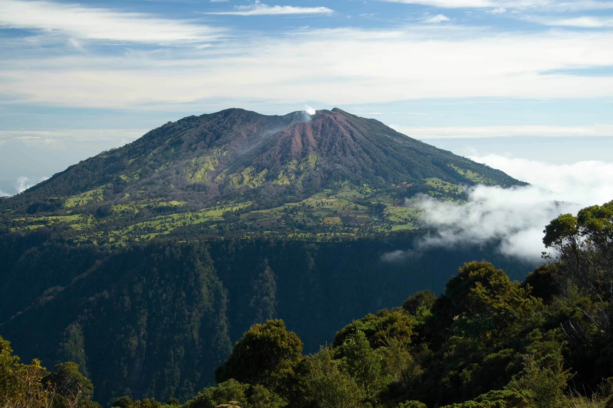

These archaeological ruins are the remnants of Cartago's old
parish church, which was damaged by earthquakes. The ruins offer a
glimpse into the city's colonial past.
Location
Orosi Valley
A picturesque valley with stunning landscapes, Orosi Valley is
known for its coffee plantations, hot springs, and the Orosi
River.
The colonial-era Orosi Church is a notable landmark in the area.
Location
Tapantí National Park
A lush and biodiverse national park offering hiking trails through
cloud forests, rivers, and waterfalls.
The park is great for birdwatching and enjoying nature.
Location
Lankester Botanical Garden
A botanical garden known for its impressive collection of orchids
and other tropical plants.
Location
Guayabo National Monument
An archaeological site featuring ancient ruins of a pre-Columbian
settlement, including ceremonial structures and petroglyphs.
Location
Ujarras Ruins
The ruins of the colonial-era Ujarrás Church are located amidst
scenic surroundings, near the Ujarrás Reservoir.
Location
Prussia Park
A park known for its serene ambiance, fountains, and sculptures.
It's a peaceful spot for relaxation and reflection.
Location

Irazu Volcano National Park
This park is home to the Irazú Volcano, one of Costa Rica's most
iconic volcanoes.
Visitors can reach the summit for panoramic views of the
surrounding landscape and the green-colored crater lake.